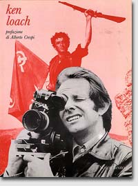
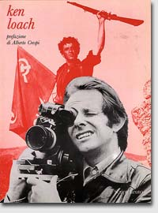

Ken Loach, son oeuvre
 
Filmographie
Loach on the BBC
- 1964: Catherine; Z Cars; The Diary of a young man
- 1965: Tap on the Shoulder - Wear a very big hat -
Three Clear Sundays - The end of Arthur's marriage;
Up the junction; The coming out party - 1966: Cathy come home
- 1967: In two minds
- 1968: The golden vision
- 1969: The big flame; In black and white
- 1971: Talk about work; Rank and File; After a lifetime
- 1975: Days of hope
- 1977: The price of coal
- 1980: The Gamekeeper
- 1981: A question of leadership
- 1982: Questions of leadership
- 1985: Which side are you on?
- 1989: The view from the Woodpile
- 1996: The Flickering Flame
- 1998: Another city
Loach en salle
- 1967: Poor Cow (Pas de larmes pour Joy)
- 1969: Kes
- 1971: Family life
- 1979: Black Jack
- 1981: Looks and smiles
- 1986: Fatherland
- 1990: Hidden Agenda
- 1991: Riff-Raff
- 1993: Raining Stones
- 1994: Ladybird, Ladybird
- 1995: Land and Freedom
- 1996: Carla's song
- 1998: My name is Joe
- 2000: Bread and Roses
- 2001: The navigators
- 2002: Sweet sixteen; 11'09''01
- 2004: Just a kiss
- 2006: The wind that shakes the barley (Le vent se lève)
Guillaume Andreux - CIAN 2006/2007 - Sources: Bibliothèque du Film (BIFI)
Site
optimisé
pour